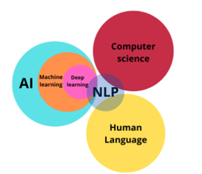

基础概念
约 1190 个字 1 张图片 预计阅读时间 4 分钟
Natural Language Processing (自然语言处理 NLP)¶
NLP 是一种通过计算机化手段分析文本的方法.
- Alphabat: symbols 的有限集
E.g. \(\Sigma = \{ 0,1\}, = \{A,C,G,T\}\) - String: Alphabat 里面的符号组成的有限序列
E.g. \(s = 1010,x = AACAG,y = e\) - Language: strings 组成的集合
E.g. \(A = \{'Charles','Lance'\}, B = \{w|w 表示奇数\}, C = \empty\)
NLP and AI¶
NLP 领域的交叉
- 是计算机科学
- 人工智能
- 语言学

NLP 简短历史¶
Phase 1: 1940年代末—1960年代末（规则）¶
关键词：理性主义 · 符号处理 · 基于规则
- 焦点：机器翻译
- 语言对：俄语 → 英语（冷战背景）
- 方法：基于规则 + 双语词典（词对词映射）
- 代表事件：1954年乔治城-IBM实验——首次公开演示机器翻译，虽然只有60句精心挑选的句子，但轰动一时
- 局限：无法处理歧义和惯用语，系统脆弱，难以扩展
Phase 2: 1960年代末—1970年代末（知识）¶
关键词：世界知识 · 受限领域 · 意义表示
- 特点：研究者意识到光有语法不够，必须引入“世界知识”来构建和操作意义表示
- 代表系统：BASEBALL 问答系统（Green 等人, 1961）
- 领域受限：只能回答关于棒球比赛的问题
- 处理简单：通过关键词匹配数据库，回答如“谁赢了7月4日的比赛？”
- 意义：早期“让机器理解概念”的尝试，是垂直领域对话系统的雏形
Phase 3: 1970年代末—1980年代末（逻辑/编译）¶
关键词：语法理论 · 逻辑推理 · 可扩展性
- 痛点：前两代系统输入受限 → 难以扩展，无法处理真实世界的开放文本
- 发展：语言学家提出更完善的语法理论（如GPSG、LFG），试图用形式化方法覆盖更多语言现象
- 方法：采用语法-逻辑方法，将自然语言转换为逻辑表达式，再进行推理
- 代表工具：
- SRI 核心语言引擎（Alshawi 等人, 1992）：通用语言理解平台，支持多种语言
- Alvey 自然语言工具集（Briscoe 等人, 1987）：英国大规模NLP研究计划产物
- 局限：人工编写规则和逻辑仍耗时耗力，难以覆盖所有语言现象
Phase 4: 1990年代末—2010年代末（统计/学习）¶
关键词：经验主义 · 数据驱动 · 统计学习
- 范式转移：从“让人教机器规则”转向“让机器从数据中自动学习”
- 标志性著作：《统计自然语言处理基础》（Manning & Schütze, 1999）—— 一代NLP学者的“圣经”
- 技术特征：
- 浅层处理：不追求深度语义分析，通过统计词频、搭配模式完成任务
- 有限状态解析：用有限状态机处理语言，效率高、速度快
- 表层模式匹配：在信息抽取等任务中效果显著
- 资源建设（为统计提供“燃料”）：
- WordNet（Fellbaum, 1999）：大规模英语词汇语义网，按词义组织
- 英国国家语料库（BNC）：1亿词规模的英语语料，用于建模和评估
Phase 5: 现在进行时（深度学习）¶
关键词：连接主义 · 端到端 · 预训练 · 大语言模型
- 核心引擎：深度学习（Deep Learning）
-
关键技术突破：
- 词嵌入（Word Embeddings）
- 将单词表示为稠密向量（如 Word2Vec, GloVe）
- 意义：让计算机理解“国王 - 男人 + 女人 ≈ 女王”
- 序列到序列模型（Sequence-to-Sequence）
- 编码器-解码器架构，彻底改变机器翻译、摘要等任务
- 输入输出长度可不同，真正实现“理解后再生成”
-
注意力机制与记忆网络（Attention / Memory）
- 让模型在处理时“关注”输入的重要部分
- Transformer 架构（2017）的核心：“Attention is All You Need”
-
预训练语言模型（Pre-trained Language Models）
- 先预训练：在海量文本上学习通用语言知识（如 BERT, GPT）
- 后微调：针对具体任务少量调整即可使用
- 意义：真正实现“一鱼多吃”，NLP进入“预训练时代”
-
提示学习（Prompting）
- 不再微调模型，而是通过设计提示词让大模型直接完成任务
- 例子：GPT-3, ChatGPT —— 你只需要写“翻译成法语：你好”，模型就懂
- 意义：让人机交互更自然，打开通用人工智能的想象空间
- 词嵌入（Word Embeddings）
总结：NLP 五阶段演进脉络¶
| 阶段 | 时间 | 范式 | 核心方法 | 代表资源/系统 |
|---|---|---|---|---|
| 1 | 1940s-1960s | 规则 | 词典 + 语法规则 | 乔治城-IBM实验 |
| 2 | 1960s-1970s | 知识 | 世界知识 + 受限领域 | BASEBALL 系统 |
| 3 | 1970s-1980s | 逻辑 | 语法理论 + 逻辑推理 | SRI 核心语言引擎 |
| 4 | 1990s-2010s | 统计 | 统计学习 + 浅层处理 | WordNet, BNC |
| 5 | 现在 | 深度学习 | 预训练 + 提示学习 | BERT, GPT, ChatGPT |